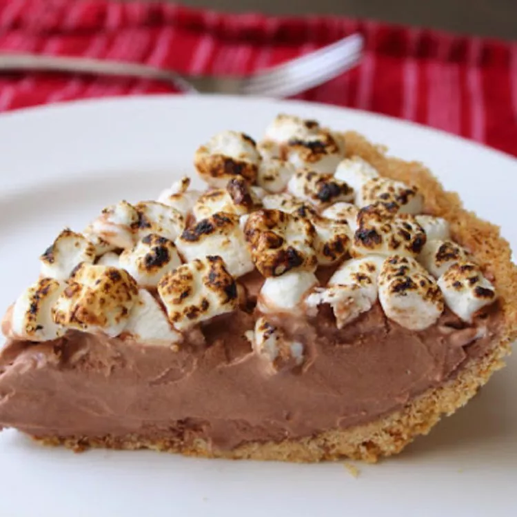

S'more Ice Cream Pie
We're turning s'mores into the perfect Father's Day-inspired dessert. Your father
will associate this pie with so many things men love: building fires, carving pointy
sticks, scaring things, and so forth. This has the classic three layers of the s'more:
the graham crackers, chocolate, and toasted marshmallows.

Ingredients
- 1 ½ cups finely crushed graham cracker crumbs
- ¼ cup white sugar
- 6 tablespoons butter, melted
- 1 (28 ounce) package chocolate ice cream, slightly softened
- 2 cups miniature marshmallows, or enough to cover the top
Directions
-
Place graham cracker crumbs into a bowl, add sugar and melted butter, and mix until
well combined. Transfer mixture into a 9-inch pie dish. Gently press graham cracker
mixture into the bottom and up the sides of the pie dish using a spatula. Pat the edge
and inside of the crust smooth with your fingers.
- Refrigerate crust until thoroughly chilled, at least 30 minutes.
-
Fill crust with chocolate ice cream using a small ice cream scoop. Smooth the ice cream
with a spatula. Place a ring of mini marshmallows around the inside of the crust and
cover top of ice cream with remaining marshmallows. Gently press marshmallows into the
ice cream.
- Freeze until very firm, at least 2 hours.
-
Use a propane blow torch to toast the marshmallows, moving the torch quickly to brown
the marshmallows. Marshmallows should have small charred spots. Return to freezer to
chill the marshmallow topping, at least 3 hours; slice and serve.